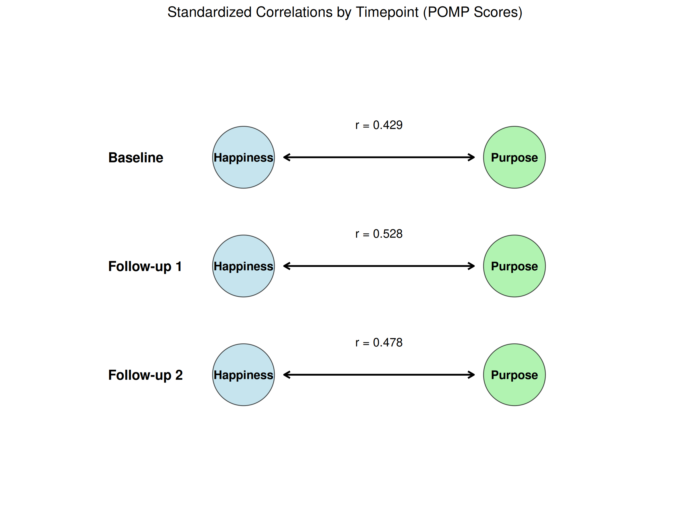
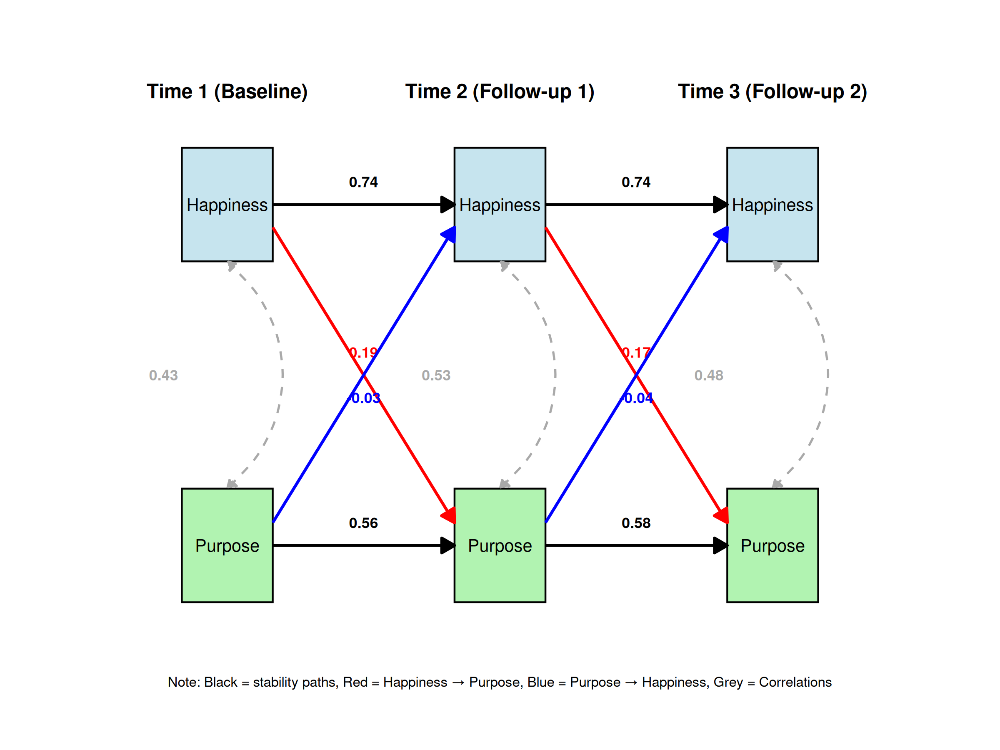
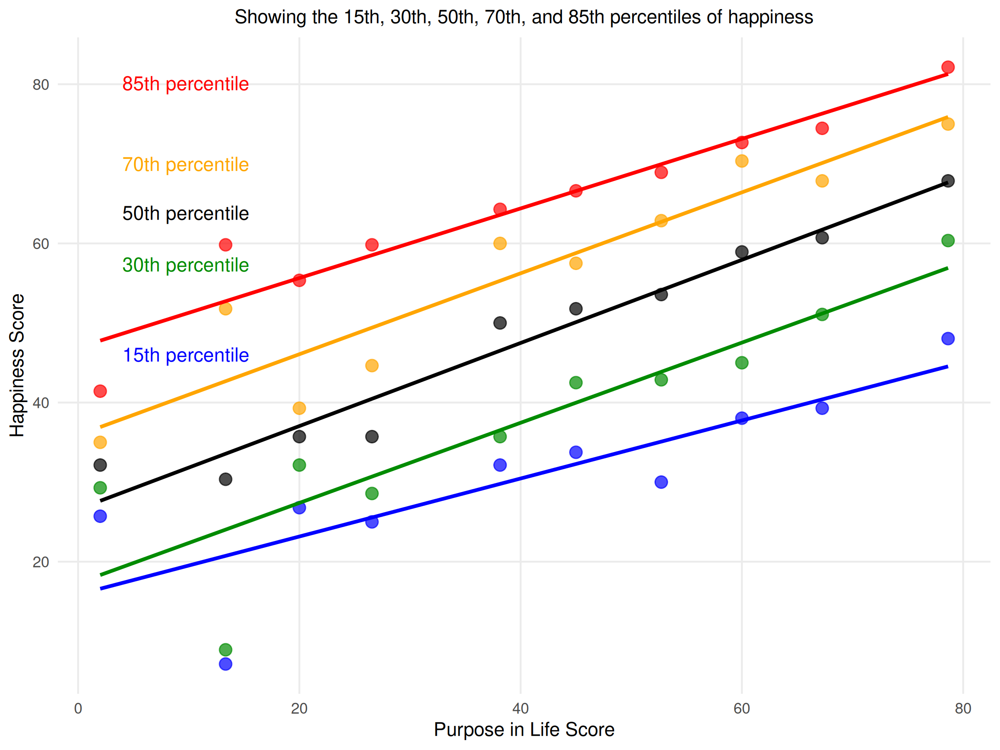
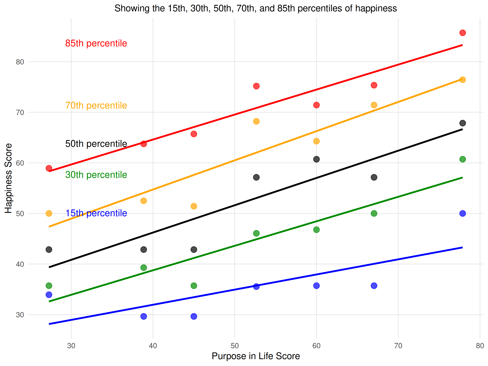
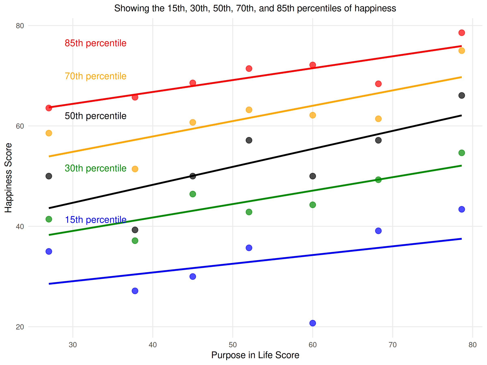
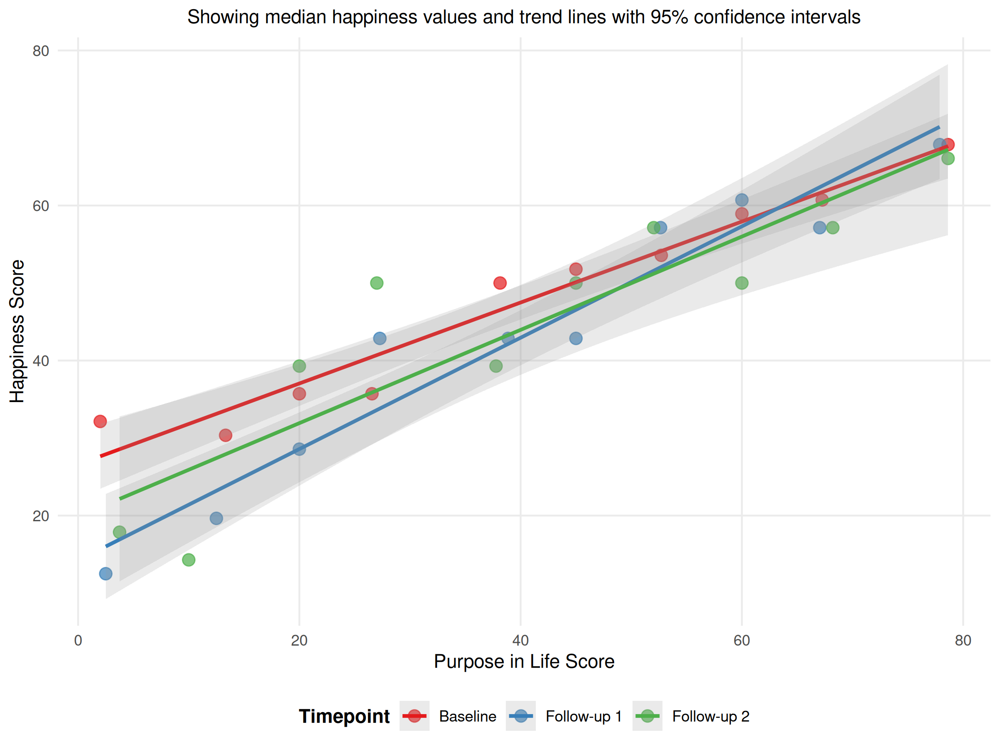

![]()
| Measure | Timepoint | N | Mean | SD | Min | Max | Cronbach's α |
|---|---|---|---|---|---|---|---|
| Happiness Measure | |||||||
| Happiness | Baseline | 328 | 53.09 | 19.23 | 0.00 | 85.71 | 0.874 |
| Happiness | Follow-up 1 | 200 | 53.73 | 20.08 | 0.00 | 85.71 | 0.887 |
| Happiness | Follow-up 2 | 119 | 51.56 | 20.18 | 0.00 | 82.14 | 0.889 |
| Purpose Measure | |||||||
| Purpose | Baseline | 314 | 54.17 | 17.86 | 0.00 | 80.00 | 0.844 |
| Purpose | Follow-up 1 | 197 | 55.23 | 16.96 | 0.00 | 80.00 | 0.904 |
| Purpose | Follow-up 2 | 119 | 54.58 | 18.13 | 0.00 | 80.00 | 0.884 |
Measuring Purpose and Happiness
Psychometrics and Tests of Stability and Specificity Over Two Years
Abstract
In the social sciences, a case has been made for distinguishing between purpose in life and happiness. That said, a surprisingly small number of direct empirical comparisons exist that test both the stability of these measures and the stability of the relationship between them over time. The following study addresses these empirical omissions and provides a benchmark for evaluating the bivariate relationship between important constructs in positive psychology. We used the best tools available to assess every aspect of these two constructs. Our findings were clear and reproducible; both purpose and happiness measures produce stable estimates over time and the correlation between them suggests that they are correlated (\(r > .43\); \(p < .001\)). Finally, the causal direction appears to favor happiness predicting subsequent ratings of purpose rather than the alternative (\(r \approx 0.15\) vs. \(r \approx -0.04\)). We address the implications of all these findings and provide researchers with both some guidance on the use of these constructs as well as some future directions for research.
Keywords
purpose in life, happiness, life satisfaction, well-being, values, personality
Analysis 1: Descriptives and Psychometrics (Comparability of Measures)
Analysis 2: Multi-Sample Analysis (Temporal Stability of Relationship)
| Timepoint | Correlation (r) | p-value |
|---|---|---|
| Baseline | 0.429 | 0.000 |
| Follow-up 1 | 0.528 | 0.000 |
| Follow-up 2 | 0.478 | 0.000 |
| Baseline | 0.440 | 0.000 |
| Follow-up 1 | 0.568 | 0.000 |
| Follow-up 2 | 0.495 | 0.000 |
| Note. All correlations are significant at p < .001 |

Analysis 3: Cross-lagged Panel Analysis (Causal Direction)
| Path Type | Path | Coefficient | Standardized | p-value | |
|---|---|---|---|---|---|
| Auto-regressive Paths | |||||
| Auto-regressive | Happiness (T1→T2) | 0.783 | 0.740 | < .001 | *** |
| Auto-regressive | Happiness (T2→T3) | 0.718 | 0.742 | < .001 | *** |
| Auto-regressive | Purpose (T1→T2) | 0.544 | 0.556 | < .001 | *** |
| Auto-regressive | Purpose (T2→T3) | 0.609 | 0.582 | < .001 | *** |
| Cross-lagged Paths | |||||
| Cross-lagged | Happiness→Purpose (T1→T2) | 0.168 | 0.185 | 0.002 | ** |
| Cross-lagged | Happiness→Purpose (T2→T3) | 0.149 | 0.165 | 0.028 | * |
| Cross-lagged | Purpose→Happiness (T1→T2) | -0.039 | -0.035 | 0.527 | |
| Cross-lagged | Purpose→Happiness (T2→T3) | -0.049 | -0.043 | 0.558 | |
| Indirect Effects | |||||
| Indirect Effect | Purpose→Happiness→Purpose | 0.064 | — | 0.199 | |
| Indirect Effect | Happiness→Purpose→Happiness | -0.043 | — | 0.558 | |
| Note. * *p < .05 † **p < .01 ‡ ***p < .001 | |||||

Analysis 4: Quantile Regression (Deeper Look into the Relationship)
| Timepoint | Quantile | Slope | t-value | p-value | ||
|---|---|---|---|---|---|---|
| Baseline | ||||||
| b_purpose | Baseline | 15th | 0.40 | 3.91 | < .001 | *** |
| b_purpose1 | Baseline | 30th | 0.54 | 6.80 | < .001 | *** |
| b_purpose2 | Baseline | 50th | 0.48 | 7.39 | < .001 | *** |
| b_purpose3 | Baseline | 70th | 0.48 | 6.02 | < .001 | *** |
| b_purpose4 | Baseline | 85th | 0.40 | 6.25 | < .001 | *** |
| Follow-up 1 | ||||||
| fu1_purpose | Follow-up 1 | 15th | 0.50 | 3.56 | < .001 | *** |
| fu1_purpose1 | Follow-up 1 | 30th | 0.57 | 5.62 | < .001 | *** |
| fu1_purpose2 | Follow-up 1 | 50th | 0.71 | 8.09 | < .001 | *** |
| fu1_purpose3 | Follow-up 1 | 70th | 0.71 | 6.16 | < .001 | *** |
| fu1_purpose4 | Follow-up 1 | 85th | 0.49 | 4.02 | < .001 | *** |
| Follow-up 2 | ||||||
| fu2_purpose | Follow-up 2 | 15th | 0.41 | 2.18 | 0.032 | * |
| fu2_purpose1 | Follow-up 2 | 30th | 0.57 | 4.49 | < .001 | *** |
| fu2_purpose2 | Follow-up 2 | 50th | 0.55 | 4.15 | < .001 | *** |
| fu2_purpose3 | Follow-up 2 | 70th | 0.45 | 3.38 | < .001 | *** |
| fu2_purpose4 | Follow-up 2 | 85th | 0.29 | 2.17 | 0.032 | * |
| Note. * *p < .05 † **p < .01 ‡ ***p < .001 | ||||||



